Beeler, M., Gosper, R.W., and Schroeppel, R. HAKMEM. MIT AI
Memo 239, Feb. 29, 1972.
Retyped and converted to html ('Web browser format) by
Henry Baker,
April, 1995.
HARDWARE
Previous
Up
ITEM 181 (Gosper):
A bug you might try to avoid when designing floating point hardware,
relating to excess-200, 1's complement exponent, 2's complement
fraction convention:
- An advantage is that negation and numerical comparison can be
accomplished with the same instructions for both fixed and floating
point numbers.
- A disadvantage is that the termination of the normalization
process is ambiguous. Normally, when the sign bit unequals the
highest bit of fraction, the number is normalized. A special case
arises with negated powers of two. (That is, -(2^n), not (2)^-n.)
Then the fraction is 400,,0 and the sign is - also.
This means it is necessary to check whether shifting left one more bit
will bring in a one:
- if it brings in a zero, you will over-normalize
- if it brings in a one, you should do it
If you should but don't, rounding will un-normalize, and when you then
re-normalize, the normalizing amount will be doubled, so you will be
off by 2 smidgens (that is, the next to low order bit). Note that
rounding can over-normalize as well as un-normalize, so you can't just
stop normalization after rounding.
You might check this in your PDP-6/10. For example, combine
201400,,0+delta with minus 200777,,777777+2delta. For 0 <= delta
<= 7777, the correct FMP result is minus 200777,,777776, and the
correct FMPR result is minus 200777,,777777.
Over-normalized negative powers of 2 work in compares and most
floating arithmetic. They lose with MOVN and as dividends.
Unnormalized floating operands win completely on the PDP-10, except as
divisors and dividends, the latter suffering truncation error.
ITEM 182 (Roe): VOLTAGE REGULATORS
Fairchild is now supplying positive voltage regulators costing about 2 dollars
in lots of 1 (for example, the uA7805 for +5 volts).
ITEM 183 (Roe): CURRENT MIRRORS
The CA3083 (and CA3084) transistor arrays can be used to make neat current
mirrors. (A current mirror supplies a current on one wire equal to that drawn
from a second wire.)
ITEM 184 (Roe): ONE-SHOT
A dual MOS D-type flip-flop (such as the CD4013AE) can be used to make
a one-shot as follows:
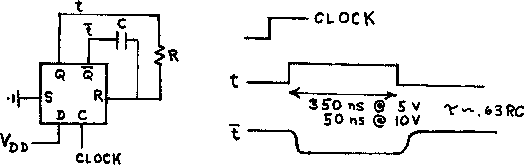
ITEM 185 (Roe): OSCILLATORS
Everyone has their own favorite oscillator circuits; here are some we like.
- I. crystal, overtone, transistor
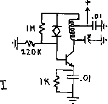
- II. crystal, fundamental, transistor (drives at least 1 TTL load)
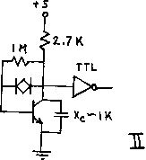
- III. crystal, fundamental, CMOS, low frequency (drives 1 TTL load
at 5.4 volts and no load, draws 330 microamperes; with a 165 KHz, 32
pf crystal, varies about 10 Hz per volt of Vcc)
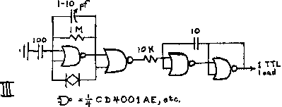
- IV. crystal, fundamental, IC (a favorite of Nelson's, but be
careful and lucky or it may oscillate at a frequency determined by the
crystal holder capacitance and not by the crystal; note similarity to
non-crystal oscillator V)
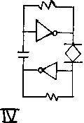
- V. not crystal controlled; for comparison with IV
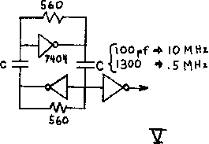
- VI. The following blocking oscillator is quite uncritical of component
values, with the exception that the turns ratio be such that -Vb (see
graph) not exceed BVebo (about 5 volts for silicon transistors).
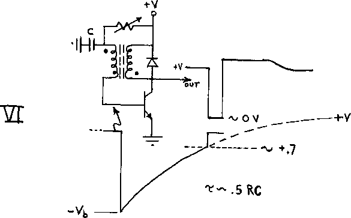
ITEM 186 (Roe): FM RADIO LINK
In work on education at our lab, we built a motorized "turtle" controlled by
computer commands in the child-oriented language "Logo". The following is a
transmitter designed as a radio link between the computer and turtle. Input
(modulation) is either 0 or +1 volts; output is about 88MHz. Use a commercial
FM tuner as receiver. Note: this transmitter is ILLEGAL no matter what; part
15 low power rule only allows if duty is less than about 1 second per 15
minutes. Don't worry about it unless you interfere with broadcast stations.
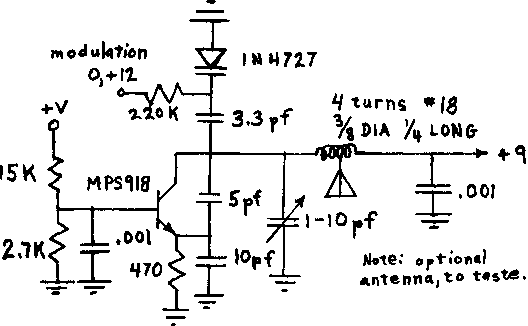
ITEM 187 (Roe): PHONE LINE XMTR, RCVR
When the chess program written at our lab is playing in a chess tournament, a
human attendant at the tournament moves the pieces, punches the clock, and
communicates with the program via a portable terminal coupled to a telephone
line. It is desirable that the program know when its chess clock is running,
even though the attendant may not notice immediately that the opponent has made
his move and punched the clock. Therefore we built a clock holder with a
microswitch to sense the clock state. The following is a 10 mw transmitter
whose input is the microswitch and whose output goes onto the phone line. It
switches between two frequencies, about 320 and 470 Hz. Also shown is the
receiver. Input should be at least 100 mv rms (threshold is 20 mv and overload
is above 68 volts) with peak to peak signal to noise ration grater than 4:1.
As we all know, connections to phone lines are illegal unless made through a
data coupler supplied by TPC (The Phone Company).
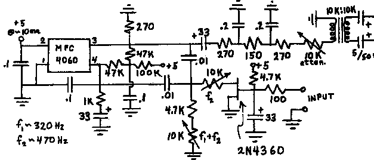
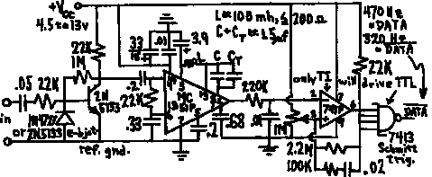
ITEM 188 (Roe): DC MOTOR VELOCITY SERVO
One version of the "turtle" mentioned above (see RADIO LINK) uses a DC
motor to drive each of its two powered wheels. since its path is to
be as straight as possible, a triangular pulse is generated (to
represent one "step" of the motor) and the motor's velocity servoed to
this analog command. An additional digital command enables forward or
reverse motion. Diagram I shows a simplified velocity servoing
circuit. It has the disadvantage that only half the maximum voltage
available (-V to +V) can be applied across the motor at any one time.
Diagram II shows the actual circuit used in the turtle.
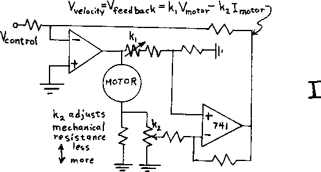
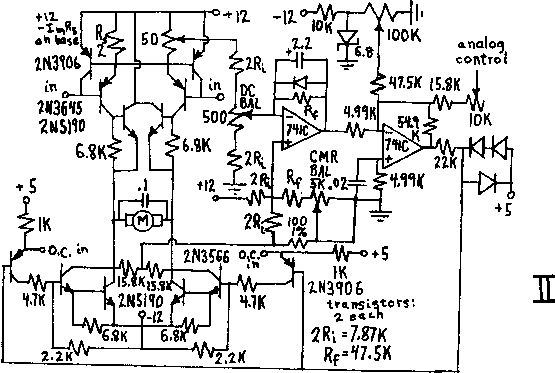
ITEM 189 (Roe): OPTICAL COUPLER
When two circuits are at potentials differing by a few hundred volts but wish
to communicate with each other, one solutions is to use an optical coupler.
these employ a light-emitting device placed close to a light-sensitive device.
diodes make very fast-responding sensors, but the signal from a light-sensitive
transistor is much stronger. shown is a compromise, using a transistor as a
diode, with associated cleverness to get the delay (from input to output) down
from 10 microseconds to 1.
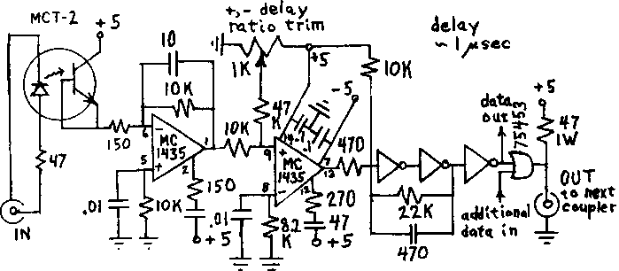
ITEM 190 (Roe): PHOTOCATHODE CURRENT OSCILLATOR
In our fourth computer-interfaced image sensing device, TVD (really a
vidissector, not a TV), the photocathode sits at several thousand volts
negative. Nevertheless, one wishes to sense the current it draws, since
overcurrent should shut down the photocathode voltage to avoid damage to the
photocathode. The following circuit draws no more than 400 microamperes at 10
volts (at 20 KHz out; about 200 microamperes at 10 KHz) and couples the current
information out as the frequency sent to T2, whose coils are wound on opposite
sides of a ceramic ferrite.
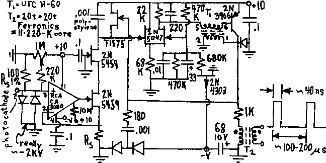
ITEM 191 (Roe): DEFLECTION AMPLIFIER
TVD, mentioned above, uses a very carefully designed printed circuit amplifier
to supply current to its magnetic deflection coils. Except for the notes with
the diagram, we submit it without further explanation or cautions.
Notes:
- Except where noted, resistors 10%, 1/4 watt.
- Capacitances in microfarads/volts; electrolytics aluminum.
- Diodes 1N4727, 1N4154, 1N4009 etc.; stored charge no more than 80
picocoulombs at 1 milliampere forward current.
- 1D103 = GE thermistor mounted at center of main heat sink.
- 220J = Analog Devices chopper amplifier.
- * = temperature protection circuit (overtemperature cutout).
- Q2, Q3, Q4, Q5, Q6, Q12,l Q13, Q14, Q15, Q16 mounted on one 1
Centigrade degree per watt heat sink (e.g., Wakefield 621K 1/2 inch in
front of Rotron Muffin fan). Case temperature about 70 degrees C max.
Ground heat sink and insulate transistors.
- All transistors Motorola.
- All zeners 1 watt.
- VE48X = Varo; could be two 2 A 50 PIV fast recovery.
- Output capacitance about 800 pf; damping R about 150 ohms for critical
damping.
- Slews from + (or -) 2 A to - (or +) 2 A in 4 microseconds; dE/dt is
hot side of deflection coil is about a billion v/sec.
- Layout is critical, as with most fast high-gain circuits.
- A By-passing and lead inductance: Short wide strips (or, better, a ground
plane) should be used for ground bus, and ceramic capacitors with leads as
short as practicable used for bypassing. Best bypass capacitor is
Allen-Bradley CL series.
- B Ground loops: reference ground (triangles) and power ground must be
interconnected only at the cold side of the sense resistor; take care to avoid
stray current through the cold side of the signal input.
- C In general, the device should be constructed like a 144 MHz transmitter to
avoid its becoming one.
- The 100 pf stabilizing capacitor may want to be higher to decrease hunting
and ringing, which could improve settling time more than the reduced
gain-bandwidth would increase it.
Q1, Q12, Q13 MPS-U01
Q11, Q2, Q3 MPS-U51
Q4, Q5, Q6 2N5194
Q14, Q15, Q16 2N5191
Q7 MPS-U02
Q17 MPS-U52
Q8, Q19 2N3906
Q9, Q18 2N3904
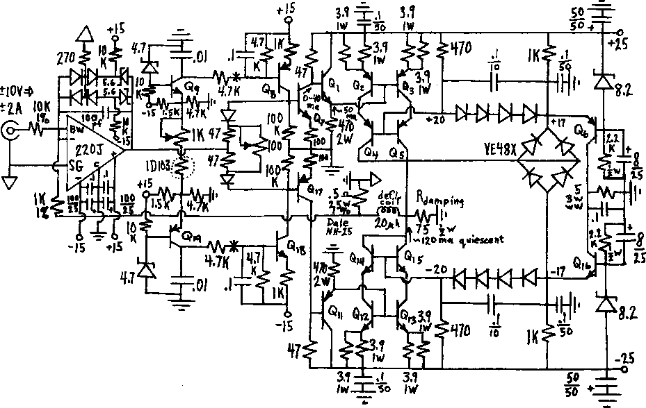
Previous
Up